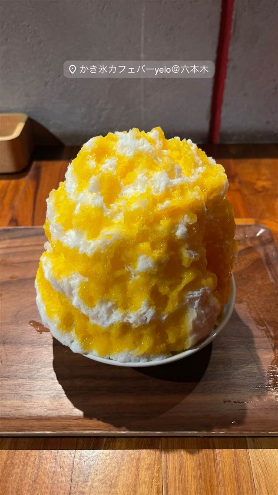
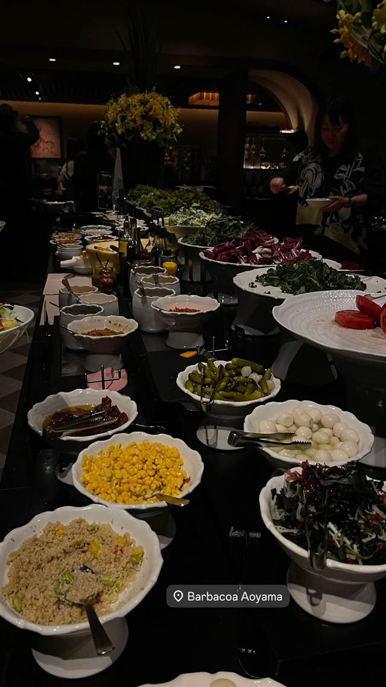

ととけん(totoken_hamacho)
隅田川沿いを走った後にサウナで整えて飲む生ビール
ととけん
WHY GO
隅田川沿いを走った後に整うランニングとサウナとビールの複合施設
Webマガジン「フイナム」が手がける、ランニングとサウナとビールを組み合わせた複合施設「ととのい研究所」の略称が店名の由来。2023年9月に日本橋浜町にオープンし、隅田川沿いを走った後にサウナで整い、冷えたビールを楽しめる。
TRIVIA
豆知識
- 店名「ととけん」は「ととのい研究所」の略称
- 飲食店ではなくランニングステーション兼サウナ施設で、ビールを提供するバーが併設されている
| 創業 | 2023年9月30日オープン |
|---|---|
| 系譜 | Webマガジン「HOUYHNHNM（フイナム）」を運営する株式会社ライノの「フイナムランニングクラブ」が手がける |
| 看板 | サウナ後に楽しむ生ビール・缶ビール（タップ3種） |
| こだわり | ランニングステーション＋サウナ＋ビールバーの複合施設。サウナは12人収容、9℃の水風呂を備える |
| どこから | 都心 |
| 場所 | 水天宮前駅 東京都中央区日本橋浜町3-9-7 |
| メモ | 水天宮前駅から徒歩5分。CAMPFIREのクラウドファンディングで実現 |
食べたもの：店外観
NEARBY
近い店・同じ系統の店
-
 バー 六本木
RIGOLETTO BAR AND GRILL
名物バーガーはヒルズ主催コンテストで最多5回優勝の実力店
夜 ¥3,000～¥3,999
バー 六本木
RIGOLETTO BAR AND GRILL
名物バーガーはヒルズ主催コンテストで最多5回優勝の実力店
夜 ¥3,000～¥3,999
-

バー 六本木 KAKIGORI CAFE&BAR yelo 年間200杯食べ歩くオーナーの店、朝5時まで味わえるかき氷 昼 ¥1,000～¥1,999 夜 ¥1,000～¥1,999 - 写真なし バー 恵比寿駅 BAR MARTHA タンノイのオートグラフや年代物の真空管アンプでレコードを1曲ずつ鳴らす 夜 ¥2,000～¥2,999
-

バー 表参道 バルバッコア 青山本店 1994年に日本上陸したブラジル発シュラスコ15種食べ放題 昼 ¥6,000～¥7,999 夜 ¥8,000～¥9,999 -
 バー たまプラーザ
Troubadour（トルバドール）
1970年代LAの伝説的音楽クラブを再現した内装でルーベンサンド
昼 ¥1,000～¥1,999 夜 ¥4,000～¥4,999
バー たまプラーザ
Troubadour（トルバドール）
1970年代LAの伝説的音楽クラブを再現した内装でルーベンサンド
昼 ¥1,000～¥1,999 夜 ¥4,000～¥4,999
-
 バー 恵比寿
bin(ビン)
猟師直送のジビエで作る北海道産鹿肉のカルパッチョ
夜 ¥5,000～¥5,999
バー 恵比寿
bin(ビン)
猟師直送のジビエで作る北海道産鹿肉のカルパッチョ
夜 ¥5,000～¥5,999